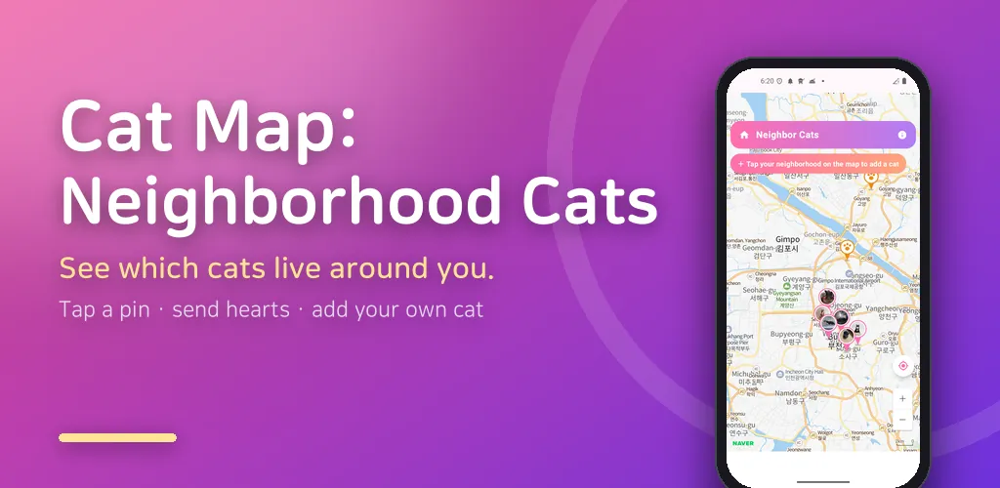
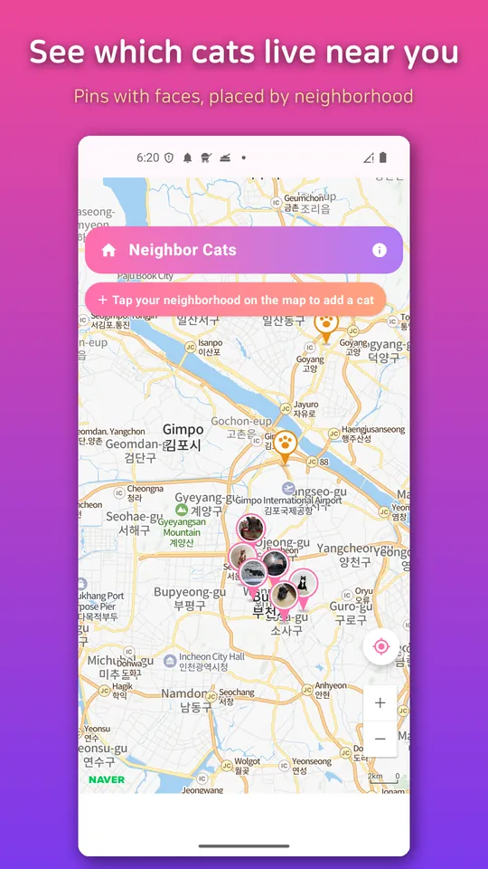
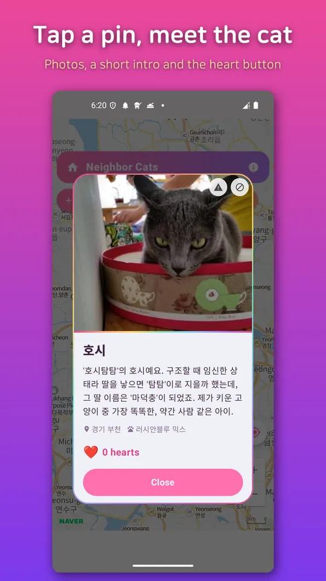
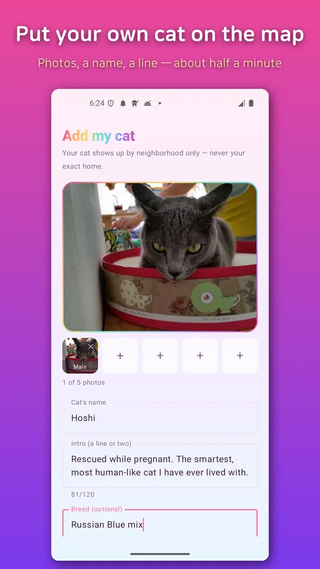
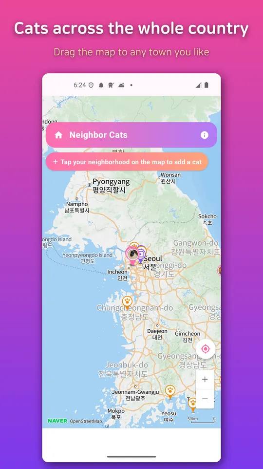
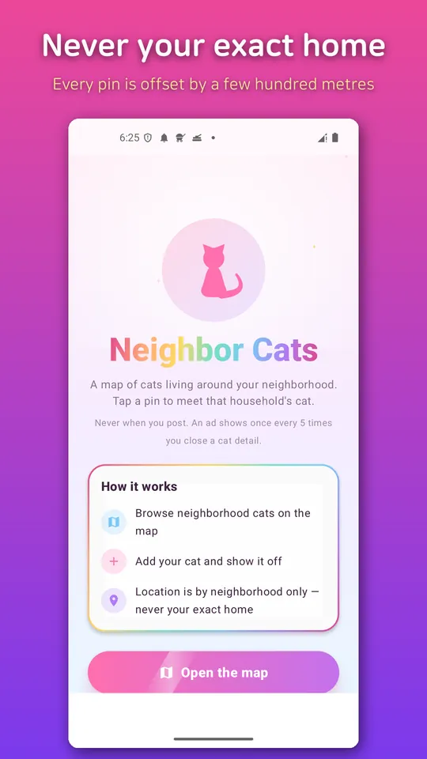

Cat Map: Neighborhood Cats
See neighborhood cats on a map, show off yours, and send hearts to local cats.






About this app
What cats live around your neighborhood?
Cat Map (Neighbor's Cat) lets you browse local cats on a map and show off your
own cat. Open the map and you'll see cat pins dotted around your area. Tap a pin
to see that cat's photos and profile, and tap the heart if it makes you smile.
The real fun is wandering the map to discover cats nearby and all across the
country.
Want to add your own cat? Just upload a few photos and a short intro, and a pin
for your cat appears on the neighborhood map. When other cat lovers tap your pin,
browse your photos, and leave hearts, it feels wonderful. No cat of your own?
You're welcome too — simply browsing the neighborhood cats can make your day a
little softer.
- What you'll love
- Browse on a map — tap cat pins around town to see photos and profiles
- Show off your cat — post photos and an intro to put your pin on the map
- Hearts — say hello to cats you adore with a tap
- From your block to the whole map — pan around to meet cats everywhere
- Warm and friendly — just the joy of showing off and browsing cats
- Privacy stays safe
Pins show only your general neighborhood, never your exact home. Photos and
profiles appear within the local area, so you can share with peace of mind. You
can report posts you don't like and block users you'd rather not see, keeping
the map a pleasant place for everyone.
- Great for
- Anyone curious about the cats living nearby
- Cat owners who'd love others to see and adore their cat
- Armchair cat lovers who want to browse without owning a cat
- Map explorers who want to meet cats across the country
This app is just for house cats you keep (not a stray-cat reporting app).
Installing, showing off, and browsing are all free. Open your neighborhood cat
map now!
※ Pins are shown at the neighborhood level only, not your exact address.
Android · free with ads · Developer: RealTunaLove · Store listing in 17 languages
Background story: why I built it